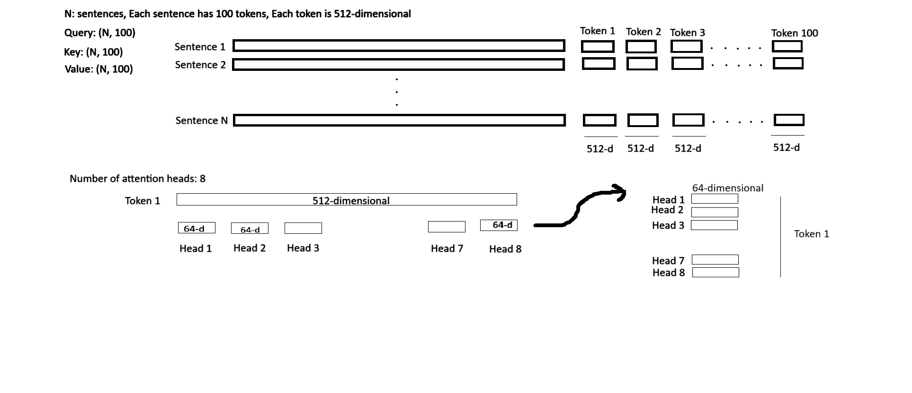
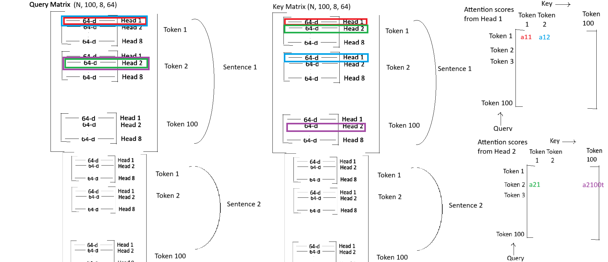
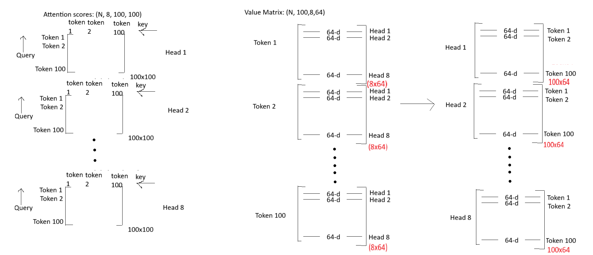
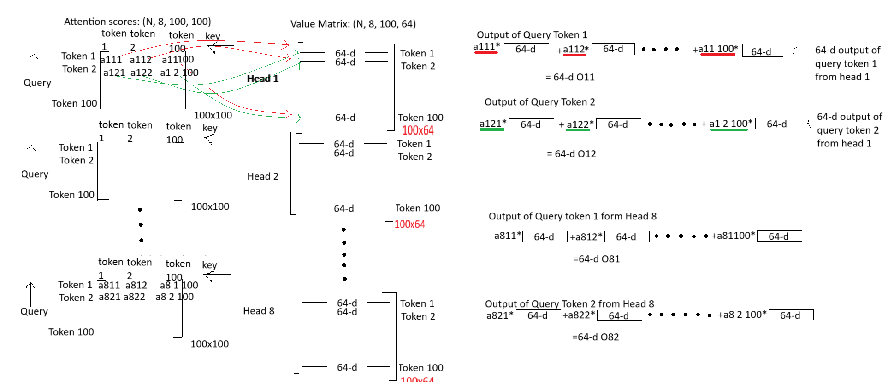
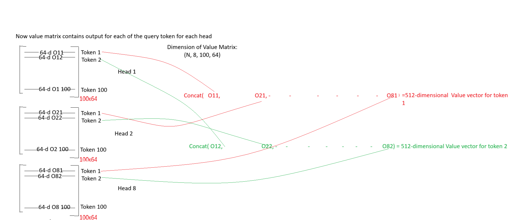

import torch
import torch.nn as nn




class SelfAttention(nn.Module):
def __init__(self, embed_size, heads): # why are we dividing the embed_size among heads
self.embed_size = embed_size
self.heads = heads
self.head_dim = embed_size // heads
self.W_k = nn.Linear(self.embed_size, self.embed_size) # every time the input to the query, key and value matrix will be a vector of dimension embed_size and it will brought down to head_dim
self.W_q = nn.Linear(self.embed_size, self.embed_size)
self.W_v = nn.Linear(self.embed_size, self.embed_size)
self.fc = nn.Linear(self.heads*self.head_dim, self.embed_size)
# The query, key and value have tokens and each token is of size embed_size.
# Suppose, there are 100 tokens in a query, each token is 512-dimensional.
# The embed_size is divided among heads. Suppose the number of heads is 8.
# The 512-dimensional token is divided among heads. Each head has 64-dimensional query
# One query has 100 tokens
# One token is 512-dimensional. Embed size is 512-dimensional.
# Each head has 64-dimensional token.
# (N, 100, 512) is the input taken by Linear layer W_q and then the output is reshaped into (N, 100, 8, 64)
def forward(self, query, key, value, mask):
N = query.shape[0]
query_len, key_len, value_len = query.shape[1], key.shape[1], value.shape[1] # here we find out how many tokens are present in query, key and value
query = self.W_q(query)
key = self.W_k(key)
value = self.W_v(value)
# reshape the query, key and value such that each head has query dimension, key dimension and value dimension equal to head_dimension.
query = query.reshape(N, query_len, self.heads, self.head_dim)
key = key.reshape(N, key_len, self.heads, self.head_dim)
value = value.reshape(N, value_len, self.heads, self.head_dim)
# calculate attention scores QK.T
# Remember: While using einsum, you only need to specify the ranks of input matrices and the output matrix, the internal computation is handled accordingly.
attention_scores = torch.einsum('nqhd, nkhd-> nhqk', [query, key])
# the input sentences are of same length even if some sentences have fewer words.
# Suppose Sentence 1 has 5 words and Sentence 2 has 11 words.
# Padding is done in sentence 1 with 6 tokens so that sentence 1 and sentence 2 has same length
# In reality, the padded 6 tokens in sentence 1 are meaningless so we require a mask to tell which tokens are real and which are not.
# Hence for sentence 1 the mask will be [1,1,1,1,1,0,0,0,0,0,0]
# For sentence 2, the mask will be [1,1,1,1,1,1,1,1,1,1,1]
# Final mask = [[1,1,1,1,1,0,0,0,0,0,0],
# [1,1,1,1,1,1,1,1,1,1,1]]
# As the non-real tokens add no value to sentence, computing attention scores on these non-real tokens is of no use.
# Hence we replace the attention scores calculated from these non-real tokens to large negative values.
# On applying softmax to these large negative values, the final attention weight will be zero.
# This satisfies our goal to not have any attention from non-real tokens.
if mask is not None:
attention_scores = attention_scores.masked_fill(mask == 0, -1e-20)
# attention weight = softmax(QK.T/sqrt(dk)) here dk is the dimension of the query which is equal to head dim
attention_weights = torch.softmax((attention_scores)/(self.head_dim ** 0.5), dim = 3)
# dimension of attention_values : (N, heads, query_len, key_len)
# multiply attention values with value vector then reshaping to concatenate all 64-dimensional value vectors of all heads into 512-d value vector
out = torch.einsum('nhqk, nkhd -> nqhd', [attention_weights, value]).reshape(N, query_len, self.heads*self.head_dim)
# pass the 512-dimensional value vector through the linear layer
out = self.fc(out)
return out
A = torch.arange(1, 17)
B = torch.arange(100,116)
A = A.reshape((4,4))
B = B.reshape((4,4))
torch.einsum('ij,kj->ik', A,B)tensor([[1080, 1090, 1100, 1110],
[2776, 2802, 2828, 2854],
[4472, 4514, 4556, 4598],
[6168, 6226, 6284, 6342]])torch.einsum('ij,jk', A,B)tensor([[1080, 1090, 1100, 1110],
[2776, 2802, 2828, 2854],
[4472, 4514, 4556, 4598],
[6168, 6226, 6284, 6342]])torch.einsum('ij,jk->ik', A,B)tensor([[1080, 1090, 1100, 1110],
[2776, 2802, 2828, 2854],
[4472, 4514, 4556, 4598],
[6168, 6226, 6284, 6342]])A@Btensor([[1080, 1090, 1100, 1110],
[2776, 2802, 2828, 2854],
[4472, 4514, 4556, 4598],
[6168, 6226, 6284, 6342]])torch.einsum('ij,kj->ikj', A, B)tensor([[[ 100, 202, 306, 412],
[ 104, 210, 318, 428],
[ 108, 218, 330, 444],
[ 112, 226, 342, 460]],
[[ 500, 606, 714, 824],
[ 520, 630, 742, 856],
[ 540, 654, 770, 888],
[ 560, 678, 798, 920]],
[[ 900, 1010, 1122, 1236],
[ 936, 1050, 1166, 1284],
[ 972, 1090, 1210, 1332],
[1008, 1130, 1254, 1380]],
[[1300, 1414, 1530, 1648],
[1352, 1470, 1590, 1712],
[1404, 1526, 1650, 1776],
[1456, 1582, 1710, 1840]]])torch.einsum('ij,kl->ijkl', A, B)tensor([[[[ 100, 101, 102, 103],
[ 104, 105, 106, 107],
[ 108, 109, 110, 111],
[ 112, 113, 114, 115]],
[[ 200, 202, 204, 206],
[ 208, 210, 212, 214],
[ 216, 218, 220, 222],
[ 224, 226, 228, 230]],
[[ 300, 303, 306, 309],
[ 312, 315, 318, 321],
[ 324, 327, 330, 333],
[ 336, 339, 342, 345]],
[[ 400, 404, 408, 412],
[ 416, 420, 424, 428],
[ 432, 436, 440, 444],
[ 448, 452, 456, 460]]],
[[[ 500, 505, 510, 515],
[ 520, 525, 530, 535],
[ 540, 545, 550, 555],
[ 560, 565, 570, 575]],
[[ 600, 606, 612, 618],
[ 624, 630, 636, 642],
[ 648, 654, 660, 666],
[ 672, 678, 684, 690]],
[[ 700, 707, 714, 721],
[ 728, 735, 742, 749],
[ 756, 763, 770, 777],
[ 784, 791, 798, 805]],
[[ 800, 808, 816, 824],
[ 832, 840, 848, 856],
[ 864, 872, 880, 888],
[ 896, 904, 912, 920]]],
[[[ 900, 909, 918, 927],
[ 936, 945, 954, 963],
[ 972, 981, 990, 999],
[1008, 1017, 1026, 1035]],
[[1000, 1010, 1020, 1030],
[1040, 1050, 1060, 1070],
[1080, 1090, 1100, 1110],
[1120, 1130, 1140, 1150]],
[[1100, 1111, 1122, 1133],
[1144, 1155, 1166, 1177],
[1188, 1199, 1210, 1221],
[1232, 1243, 1254, 1265]],
[[1200, 1212, 1224, 1236],
[1248, 1260, 1272, 1284],
[1296, 1308, 1320, 1332],
[1344, 1356, 1368, 1380]]],
[[[1300, 1313, 1326, 1339],
[1352, 1365, 1378, 1391],
[1404, 1417, 1430, 1443],
[1456, 1469, 1482, 1495]],
[[1400, 1414, 1428, 1442],
[1456, 1470, 1484, 1498],
[1512, 1526, 1540, 1554],
[1568, 1582, 1596, 1610]],
[[1500, 1515, 1530, 1545],
[1560, 1575, 1590, 1605],
[1620, 1635, 1650, 1665],
[1680, 1695, 1710, 1725]],
[[1600, 1616, 1632, 1648],
[1664, 1680, 1696, 1712],
[1728, 1744, 1760, 1776],
[1792, 1808, 1824, 1840]]]])